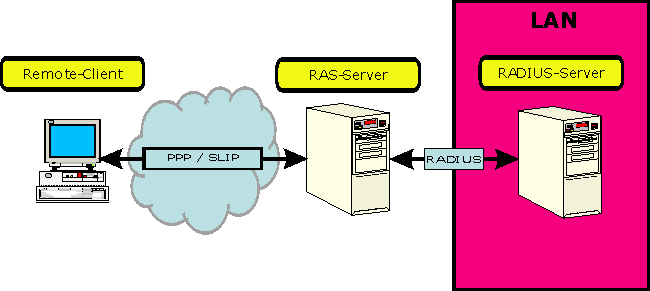
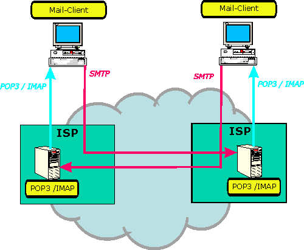

2.3.4 Höhere Protokolle
Wir beschreiben im Folgenden, zum Teil sehr grob, einige höhere Protokolle der TCP/IP-Protokollfamilie. Diese Protokolle wirken allesamt auf den OSI-Layern 5 bis 7. Sie starten Prozesse, die die Schnittstellen einerseits zum TCP/UDP-Protokoll über Ports, anderseits zu den eigentlichen Anwendungen herstellen. Diese Protokolle, die in vielen Fällen auch Dienste genannt werden, verfügen in der Regel über Konsolenschnittstellen, die ihre Administration ohne zusätzliche Software ermöglichen. Ihre konfigurierbaren Eigenschaften werden oft auch in den eigentlichen Anwendungen getroffen, die Administration erfolgt dann durch Konfiguration der Anwendung.
DHCP
Das DHCP-Protokoll (Dynamic Host Configuration Protocol) ermöglicht es, Clients in ein LAN automatisiert einzufügen. Dabei werden dem Client eine IP-Adresse, der Netzwerkname, die Gatewayadresse uam. beim Start des Betriebssystems zugewiesen. Die Zuweisung der IP-Adresse erfolgt dabei entweder dynamisch aus einem Adresspool oder statisch in Verbindung mit der MAC-Adresse des Ethernetadapters. Eine derart zugewiesene IP-Adresse wird vom DHCP-Server grundsätzlich verliehen, der Client erhält ein Lease auf eine bestimmte Zeit, das nach dessen Ablauf allenfalls automatisch verlängert wird. Eingeschaltet wird der Dienst in den Konfigurationsoptionen des IP-Protokolls durch Wahl der Option, eine IP-Adresse automatisch zu beziehen. Der Dienst arbeitet plattformunabhängig, das heißt es können etwa Windows und Unixrechner eines Netzes versorgt werden.
Der DHCP-Server hat also grundsätzlich drei Betriebsmodi:
Eine DHCP-Sitzung läuft folgendermaßen ab:
| DHCPDISCOVER | Client sucht DHCP-Server durch Broadcast an 255.255.255.255 |
| DHCPOFFER | DHCP-Server schickt Konfigurationsangebot |
| DHCPNACK | DHCP-Server lehnt den Client ab |
| DHCPREQUEST | Client wählt (aus mehreren Angeboten) ein Angebot aus und bestätigt |
| DHCPDECLINE | Client lehnt Angebot ab |
| DHCPACK | Server bestätigt dem Client das Lease |
| DHCPRELEASE | Client kündigt Lease vorzeitig |
Weiters wird während der Sitzung mit ARP oder ICMP geprüft, ob MAC-Adresskonflikte zu erwarten sind. Weiters versuchen DHCP-Clients schon vor Ablauf eines Lease, eine Verlängerung zu erhalten. Für die Administration ist wesentlich, dass das DHCP-Protokoll keine Möglichkeit vorsieht, eine vergebene IP-Adresse zu entziehen.
Wird bei einem DHCPDISCOVER kein DHCP Server gefunden und gibt es auch keine manuelle IP-Konfiguration, so weisen Microsoft Betriebssysteme ab Windows 98 automatische eine Adresse aus dem von der IANA in RFC 3330 genormten local link Block (169.254.0.0/16) zu, womit ebenfalls Subnetze entstehen. Dieses Verfahren wird als Automatic Private IP Adressing (APIPA) bezeichnet und kann abgeschaltet werden, indem man in
HKEY_LOCAL_MACHINE\SYSTEM\CurrentControlSet\Services\Tcpip\Parameters\Interfaces
einen neuen DWORD-Wert: IPAutoconfigurationEnable mit dem Wert 0 erstellt.
RADIUS
Das RADIUS-Protokoll (Remote Authentication and Dial-In User Service) vermittelt den Zugang zu einem Netzwerk über Wählleitungen (Telefon, ISDN, ADSL), und vermittelt einen gesicherten und authentifizierten Zugriff auf das Netzwerk von außen. Es arbeitet nach dem Client-Server-Prinzip: Ein im LAN befindlicher RADIUS-Server verwaltet zentral die Zugangsberechtigungen der Remote-User. Wählt sich ein User ein, so tut er dies über einen Modemserver (RAS-Server, Remote Access Server), der üblicherweise außerhalb einer allfälligen Firewall steht. Der RAS-Server besorgt nun mit Hilfe von RADIUS von einem im Netz befindlichen zentralen RADIUS-Server die entsprechenden Authentifizierungsdaten, und schaltet im günstigen Fall den entfernten Client ans Netz. Dieser Client vrhält sich dann so, als ob er im LAN wäre, als Schicht 2 Übertragungsprotokolle werden PPP (Point to Point Protokoll), ein Protokoll, das mit dem IP-Protokoll kommuniziert, oder das veraltete SLIP (Serial Line Internet Protokoll) verwendet. In der Apple-Welt ist ARAv2 (Apple Remote Access Version 2) bekannt.

Das RADIUS-Protokoll selbst erlaubt eine zentrale Verwaltung der Dial-In-Zugänge. Auch mehrere RAS-Server können bedient werden, die Vergabe der IP-Adressen erfolgt für gewöhnlich mit DHCP dynamisch. RADIUS selbst setzt auf dem UDP-Protokoll auf, seine Paketstruktur ist einfach, weil lediglich die Authentifizierungsdaten übertragen werden. Sicherheitstechnisch bedeutungsvoll ist das Authenticatorfeld, in dem Fingerprints oder die verschlüsselten geheimen Zugangsdaten übertragen werden. Es hat eine Länge von 128 Bit, was eine gewisse Sicherheit vor Hackerattacken bietet, zumal damit
2128 = 3,4*1038
Bitmuster möglich sind.
SMTP
Das SMTP (Simple Mail Transfer Protocol) stammt in seiner ursprünglichen Form aus dem Jahre 1982 und ist, abgesehen von kleinen Erweiterungen, die offiziell ESMTP (für Extended SMTP) heißen, unverändert geblieben. Es ist das Übermittlungsprotokoll für Emailnachrichten in Textform. Sein Datenrahmen enthält im Wesentlichen die Felder, die im Kopf einer Emailnachricht zu finden sind, also Systemname, Absender und Empfängeradresse und natürlich die Nachricht selbst. Zusätzlich sind noch Unterstützung von Mailinglisten oder das Einholen von Empfängerbestätigungen eingebaut. Das Protokoll arbeitet verbindungsorientiert, eine Verbindung zwischen Sender und Empfänger wird hergestellt. Bei nicht ständig eingeschalteten Arbeitsstationen ergibt sich damit die Notwendigkeit, Emails zwischenzuspeichern damit sie zu einem späteren Zeitpunkt gelesen werden können. Das vermittelt
POP
Das POP (Post Office Protokoll, eig. POP3) ist die derzeit gebräuchlichste Art, Emails über einen Provider zu erhalten. Dabei wird providerseitig ein POP-Server installiert, der in einem Spoolverzeichnis einkommende Emails speichert. Der eigentliche Empfänger, ein POP-Client kann zu einem späteren Zeitpunkt allenfalls über eine Dial-In-Verbindung seine Emails abholen, die anschließend auf dem POP-Server gelöscht werden.
Die Verbindung selbst ist eine TCP/UDP-Verbindung auf Port 110. Die POP3-Verbindung kennt mehrere Stufen, die unterschiedliche Befehlssätze kennen:
| Authorization State | Identifikation des Clients am Server | USER, PASS, QUIT |
| Transaction State | Download oder Operationen zum Bearbeiten von Mails werden ausgeführt | STAT - Anzahl der Mails und Größe
der Mailbox LIST - Nummer und Größe aller Mails zurück RETR - Gibt die Mail aus DELE - Löscht Mail NOOP - Aufrechterhaltung der Verbindung, ohne Time-Out RSET - Verbindungsabbruch ohne Transaction State QUIT - Beendet die Verbindung und führt alle gespeicherten Änderungen aus |
| Update State | Der Server beendet die TCP-Verbindung und führt die vom Client im Transaction State angeforderten Änderungen durch | |
Zusätzlich haben viele POP3-Server einen Timer, der die Verbindung trennt, falls eine einstellbare Zeitspanne von mindestens 10 Minuten inaktiv überschritten wird. Wird die Verbindung vom Timer beendet, wechselt der POP3-Server nicht in den Update State, sodass Änderungen auf dem Server nicht gespeichert werden.
IMAP
Das IMAP (Internet Message Access Protocol) operiert funktionell wie das POP-Protokoll, es hat allerdings einen größeren Funktionsumfang und wird in naher Zukunft wahrscheinlich zum Standard werden. Es hat einen größeren und syntaktisch anderen Befehlssatz, die Kommunikation läuft über den TCP-Port 143. Die Erweiterungen betreffen im Wesentlichen folgende Punkte:
Der Verbindungsaufbau läuft in vier Stufen ab:
| Non-Authenticated State | Der User muss sich gegenüber dem Server identifizieren. |
| Authenticated State | Der User hat sich identifiziert und muss nun eine Mailbox auswählen. |
| Selected State | Eine Mailbox wurde ausgewählt. Mailbox und Mails lassen sich bearbeiten. |
| Logout State | Die Verbindung wird beendet; der Server führt noch anstehende Tätigkeiten aus. |
POP3- und IMAP-Protokoll ist gemeinsam, dass sie das Abholen von Emails vom POP3- bzw. IMAP-Server des Providers vermitteln, während vom Client ausgehende Emails unmittelbar im SMTP-Protokoll verpackt und zum Empfänger oder zu dessen Mailbox geschickt werden.

Die Grafik zeigt die Kommunikationspfade zweier Emailclients, die über ISP (Internet Service Provider) miteinander kommunizieren.
MIME
Das MIME-Protokoll (multipurpose Internet mail extensions) ist
eine Erweiterung des Internet-E-Mail-Protokolls SMTP. Es gestattet eine einfachere
Übertragung von Grafiken, Audio- und anderen binären Dateien, die
kein Text sind. MIME teilt die verschiedenen Dateitypen in die Hauptgruppen
Grafik, Video und Audio und definiert die dazugehörigen Dateitypen in Untergruppen
genauer.
Voraussetzung für den Empfang und die korrekte Darstellung dieser multimedialen
elektronischen Post ist allerdings, dass das Mail-Programm des Empfängers
ebenfalls den MIME-Standard unterstützt, wovon man bei nichtpuristischer
Installation allerdings mittlerweile ausgehen darf.
FTP
Das FTP (File Transfer Protokoll) dient der plattformübergreifeden Übertragung von beliebigen Dateien über das Internet, wobei ein Internethost, auf dem Dateien bereitgestellt sind, als FTP-Server und der abrufende Host als FTP-Client bezeichnet wird. Hinsichtlich der Übertragung wird der Transfer vom Client zum Server upload und vom Server zum Client als download bezeichnet. Zugriffe über das Netzwerk kennen aus Sicherheitsgründen zwei Betriebsmodi:
FTP verwendet als Transportprotokoll TCP, das einen gesicherten Datentransfer garantiert. Die FTP-Verbindung verwendet traditionell zwei verschiedene Kanäle, den TCP-Port 21 als Steuerungskanal (command port, control port) und den TCP-Port 20 als Datenkanal (data port), die genormt sind und automatisch eingestellt werden. Die Verbindung selbst verläuft komplexer, man unterscheidet:
Die Tatsache, dass beim Active Mode der Server sich mit einem zufällig gewählten hohen Port am Client verbindet, wiederspricht zunehmend dem Sicherheitsbedürfnis der Administratoren von Clients und wird daher vielfach durch Firewalls verhindert. Da die Bereitstellung von Dateien zumeist im Interesse der Serveradministratoren liegt, wir neuerdings sehr oft Passiv Mode vereinbart, bei dem die Verbindungen durch den Client initialisiert werden, was natürlich durch die Firewall des Servers gestattet werden muss.
FTP besitzt eine eigene interaktive Konsolenanwendung, die mit
ftp gestartet und einer Hilfefunktion help
ausgestattet ist.
Die Konsole hat allerdings den Nachteil, dass bei komplexeren Dateistrukturen
die Übersichtlichkeit rasch leidet, weshalb zahlreiche FTP-Clients, die
über eine grafische Oberfläche verfügen, angeboten werden. Das
folgende Listing zeigt den Ablauf einer einfachen benutzerspezifischen FTP-Sitzung,
wie sie sich an der Eingabeaufforderung einer WIN2K-WKST präsentiert. Nach
dem Benutzerlogin wird ein Verzeichnislisting ausgegeben und die Hilfefunktion
aufgerufen, wobei Benutzereingaben fett gedruckt sind:
C:\>ftp graf.tgm.ac
Verbindung mit graf.tgm.ac wurde hergestellt.
220 PHOENIX Microsoft FTP Service (Version 5.0).
Benutzer (graf.tgm.ac:(none)): Ernst.Graf
331 Password required for Ernst.Graf.
Kennwort:
230-Willkommen auf phoenix.ccc.at !
230 User Ernst.Graf logged in.
ftp> dir
200 PORT command successful.
150 Opening ASCII mode data connection for /bin/ls.
drwxrwxrwx 1 owner group 0 Jun 13 14:08 _private
-rwxrwxrwx 1 owner group 2442 Jun 20 14:00 default.htm
drwxrwxrwx 1 owner group 0 Jun 13 17:28 images
-rwxrwxrwx 1 owner group 629 Jun 15 13:03 pcc.css
226 Transfer complete.
FTP: 276 Bytes empfangen in 0,12Sekunden 2,30KB/s
ftp> help
Befehle können abgekürzt werden. Befehle sind:
! delete literal prompt send
? debug ls put status
append dir mdelete pwd trace
ascii disconnect mdir quit type
bell get mget quote user
binary glob mkdir recv verbose
bye hash mls remotehelp
cd help mput rename
close lcd open rmdir
ftp> bye
221 Thank you for using ccc.at !
C:\>
Im Unterschied dazu das Listing einer FTP-Sitzung mit einem Server der TU-Wien, auf dem Freeware angeboten wird. Das Listing ist hier verkürzt wiedergegeben. Die Anmeldung erfolgt mit dem Benutzernamen anonymous und leerem Kennwort:
C:\>ftp gd.tuwien.ac.at
Verbindung mit gd.tuwien.ac.at wurde hergestellt.
220-
220-- G D S ------ Welcome to Goodie Domain Service
220-- D -- Vienna University of Technology, Austria
220-- S -- Dept. of Information Technology Services
220-- ****** Your Source of Open Source ******* -
220-===============================================
220-
220- What's in store here ?
220-### Goodies: Open Source Software, Freeware ###
........................................................................
220
Benutzer (gd.tuwien.ac.at:(none)): anonymous
331 Please specify the password.
Kennwort:
230 Login successful.
ftp> ls -la
200 PORT command successful. Consider using PASV.
150 Here comes the directory listing.
drwxr-xr-x 34 ftp ftp 2048 Jun 19 09:22 .
drwxr-xr-x 34 ftp ftp 2048 Jun 19 09:22 ..
drwxrwxr-x 9 ftp ftp 512 Feb 28 09:37 .admin
lrwxrwxrwx 1 ftp ftp 13 Feb 26 2002 .g -> .i/dquote.php
-rw-rw-r-- 1 ftp ftp 1039 Aug 18 2002 .gds.php
-rw-rw-r-- 1 ftp ftp 1114 Dec 19 2002 welcome.txt
-rw-rw-r-- 1 ftp ftp 1113 Dec 19 2002 willkommen.txt
drwxr-xr-x 7 ftp ftp 512 Nov 04 2002 z1
drwxr-xr-x 7 ftp ftp 512 Apr 28 17:11 z10
drwxr-xr-x 16 ftp ftp 512 May 26 11:12 z12
drwxr-xr-x 5 ftp ftp 512 Jun 04 17:56 z13
drwxr-xr-x 4 ftp ftp 512 Jan 24 13:42 z14
drwxrwxr-x 4 ftp ftp 512 Jan 27 10:34 z15
drwxr-xr-x 5 ftp ftp 512 Jan 09 10:35 z16
drwxr-xr-x 10 ftp ftp 512 May 26 10:28 z17
drwxr-xr-x 4 ftp ftp 512 Oct 15 2002 z18
drwxr-xr-x 10 ftp ftp 512 Mar 27 18:06 z2
drwxr-xr-x 7 ftp ftp 512 May 21 09:42 z3
drwxr-xr-x 6 ftp ftp 512 Jun 04 12:32 z4
drwxrwxr-x 2 ftp ftp 512 Sep 02 2002 z5
drwxr-xr-x 7 ftp ftp 512 Apr 30 08:30 z6
drwxr-xr-x 4 ftp ftp 512 Jan 21 12:44 z7
drwxr-xr-x 4 ftp ftp 512 Apr 15 13:37 z9
226 Directory send OK.
FTP: 7270 Bytes empfangen in 5,15Sekunden 1,41KB/s
ftp> bye
221 Goodbye.
C:\>
Etwas anwenderfreundlichere FTP-Sitzungen können mit den meisten Internetbrowsern (ftp://) aufgebaut werden.
Bei Verwendung des FTP-Protokolls ist zu bedenken, dass berechtigten Benutzern unter Umständen tiefgreifende Rechte auf der Verzeichnisstruktur des eigenen Hosts eingeräumt werden, und dass daher das FTP-Protokoll ein gewisses Sicherheitsrisiko darstellt zumal die Übertragung der Daten - auch der Passwörter - unverschlüsselt stattfindet.
SSH
Das SSH-Protokoll (secure shell) schafft hier eine gewisse Abhilfe. SSH sichert sowohl die Authentifizierung als auch die Kommunikation durch kryptografische Verfahren wie etwa dem Public-Key-Verfahren. Dabei wird der öffentliche Schlüssel auf dem Zielsystem hinterlegt und der private Schlüssel zur Benutzerauthentifizierung benutzt. SSH wird über eigene SSH-Clients bedient und kann Kanäle zur Terminal-Emulation ersetzen, mit denen auf einem Computer das Verhalten eines anderen Computers emuliert werden kann. Es wird häufig in der Remoteverwaltung von hinsichtlich der Sicherheit sensiblen Webhosts oder zur Dateiübertragung auf Webserver eingesetzt. SSH verwendet den TCP/UDP-Port 22.
HTTP
Das HTTP (Hypertext Transfer Protokoll) ist ein Protokoll der Applikationsschicht, das dem Internetdienst WWW (World Wide Web) entspricht. Es ist plattformunabhängig und in der Lage, mit Servern unter Einbeziehung anderer Protokolle der Applikationsschicht zu kommunizieren. Das Protokoll setzt heute üblicherweise auf TCP/IP auf.
Hinsichtlich seiner Funktionsweise operiert es nach dem Frage-Antwort-Prinzip (Request-Response). Eine HTTP-Sitzung wird zwischen einem HTTP-Client, das ist ein Webbrowser, und einem HTTP-Server, das ist ein Webserver, aufgebaut und verläuft folgendermaßen:
| Protokoll | Beispiel |
| HTTP-Client baut Verbindung auf zum HTTP-Server auf | Connected to www.tgm.ac.at. |
| HTTP-Client schickt einen Request | GET /index.html HTTP/1.0 |
| HTTP-Server schickt einen Response, der die angeforderte Nachricht enthält. | HTTP/1.1 200 OK Date: Mon, 18 Sep 2003 13:59:58 GMT Server: Apache/1.3.6 (Unix) (SuSE/Linux) Last-Modified: Tue, 29 Aug 2000 08:08:58 GMT ETag: "134015-8e8-39ab6f9a" Accept-Ranges: bytes Content-Length: 2280 Connection: close Content-Type: text/html <HTML> |
| HTTP-Server beendet die Verbindung | Connection closed by foreign host. |
Das Beispiel illustriert den Ablauf einer Sitzung, ist aber ansonsten nur von theoretischem Interesse. Die Nachricht selbst ist im HTML-Format (hypertext markup language) codiert, der am Internet üblichen Beschreibungssprache für Dokumente, die dann vom Webbrowser interpretiert und zur Anzeige gebracht werden. Überdies erkennt man, dass die Adressierung des HTTP-Servers hier mit DNS bewerkstelligt wird, wobei auch IP-Adressen zulässig wären.
VoIP (Voice over IP):
VoIP ist ein Protokoll, das Sprache in Form von Telefongesprächen (IP-Telefonie) unter Verwendung des IP Protokolls in Computernetzen überträgt. Dabei werden die Informationen nicht über eine geschaltete Verbindung leitungsvermittelt übertragen, sondern in IP-Pakete aufgeteilt, die ihr Ziel allenfalls auf verschiedenen Wegen und in unterschiedlicher Zeit erreichen. Die logistisch aufwendige Technologie ist jung, derzeit wird daran gearbeitet, Zuverlässigkeit und Qualität der klassischen Telefonie zu erreichen. Die Vorteile wären, dass die Entfernung der beiden Gesprächsteilnehmer hinsichtlich der Verrechnung unwesentlich ist, weil das IP-Protokoll verbindunglos arbeitet und dass (bei einer ausreichenden Anzahl von statischen IP-Adressen) alle VoIP-Clients weltweit unter der selben Rufnummer erreichbar wären. Telefonkosten könnten damit weiter sinken.
Hinsichtlich der Funktionalität wird ein vom Aufnahmemikrofon
erzeugtes analoges Signal mit einem ADC (Analog-Digital-Converter)
in ein digitales Signal verwandelt, das binär codiert (Codec)
und komprimiert wird, wobei - so wie etwa bei MP3 - für das Gehör
unwesentliche Informationen ausgefiltert werden. Dieses Signal wird nun in IP-Pakete
aufgeteilt. Weil nach gängigem Status Router alle IP-Pakete gleichwertig
behandeln, werden VoIP-Pakete, obwohl sie eine entsprechende Kennung haben,
nicht bevorzugt geroutet und damit die notwendige QoS
(Quality of Service) nicht erreicht, die eine unterbrechungsfreie Übertragung
der Sprachinformation gewährleisten würde. Die Schnittstelle zwischen
dem klassischen Telefonsystem und dem IP-Telefonsystem bilden Gatwayrechner,
die ankommende IP-Pakete unter Verwendung des richtigen Codecs auspacken, ordnen
und an das Empfängertelefon übertragen. Für einen korrekten Verbindungsaufbau
müssen diese Gatewayrechner weltweit erreichbar sein, also statische IP-Adressen
haben und die Telefonnummern der angeschlossenen Teilnehmer kennen. Sie sind
daher zumeist im Eigentum kommerzieller Anbieter, die Teilnetze betreiben (ICQ)
und Gespräche mit Teilnehmern in anderen Netzen nicht anbieten können,
weil eine weltweit akzeptierete Norm zur Koppelung von Telefonnummern zu IP-Adressen
fehlt. Abhilfe kann hier das von den Europäern favorisierte ENUM
Protokoll (RFC 3761, E.164-Standard der International
Telecommunication Union (ITU)) schaffen,
das die Telefonnummer in eine spezielle IP Adresse umwandelt, indem es die Nummer
stürzt und eine Kennung für die Subdomain anhängt:
Die Rufnummer
+43 1 2345 6789
wird etwa zu
9.8.7.6.5.4.3.2.1.4.3.e164.arpa
Damit ist ein Format erreicht, das von DNS weitergegeben werden kann.
Derzeit ist VoIP noch wenig verbreitet, weil es hinsichtlich der Endgeräte keine fixen Standards und nur wenige weltweit agierende Provider gibt. Für Telefongespräche innerhalb größerer Firmen mag es aber interessant sein, zumal es für diesen Bereich interessante GPL gibt.